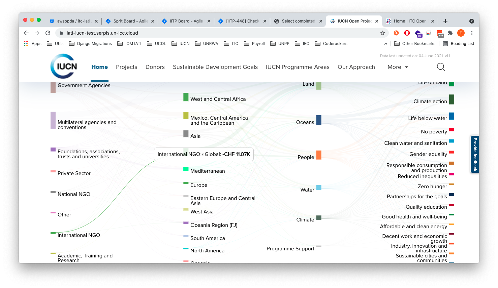

MKDocs
In this section we will briefly explain how to use MKDocs to update the user guide within this repo. For additional info on how to deploy the user guide, check the official guide.
Update the user guide
To update the user guide, follow these steps:
- Run the
docker-compose.docs.yamlconfiguration:
(root) ➜ docker-compose -f docker-compose.docs.yaml up
- Open the browser at http://localhost:9000.
- Change the documents within the
docs/docsfolder (this will trigger an auto-reload that will automatically perform changes in the UI)
Build the user guide
To build the user guide, follow these steps:
- Run the
docker-compose.docs.yamlconfiguration:
(root) ➜ docker-compose -f docker-compose.docs.yaml up
- SSH into the docs container:
(root) ➜ docker exec -it docs sh
- Build the user guide by running the command:
/code # mkdocs build
this command will build the user guide into the docs/site folder. This folder can then be used for deployment purposes(this can be deployed, for instance, using an S3 bucket).
Markdown syntax (WIP)
In this section we report an optimal set of markdown samples that are useful in the creation of the user guide.
Lists
These are some lists examples:
- First item
- Second item
- Third item
- Indented item
- Indented item
-
Fourth item
-
Open the file containing the Linux mascot.
-
Marvel at its beauty.

-
Close the file.
-
First item
- Second item
- Third item
- Indented item
- Indented item
- Fourth item
At the command prompt, type nano.
python manage.py help
[1] Notice that we have also defined a docker service (called docs). However, the auto-reload feature is not fully working with docker and that's why we are suggesting to create a local virtual environment to update the user guide.